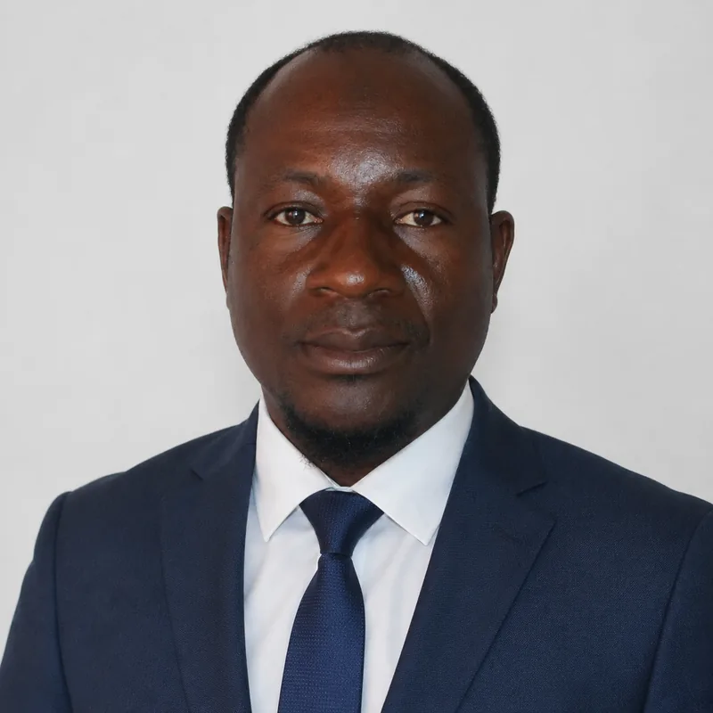
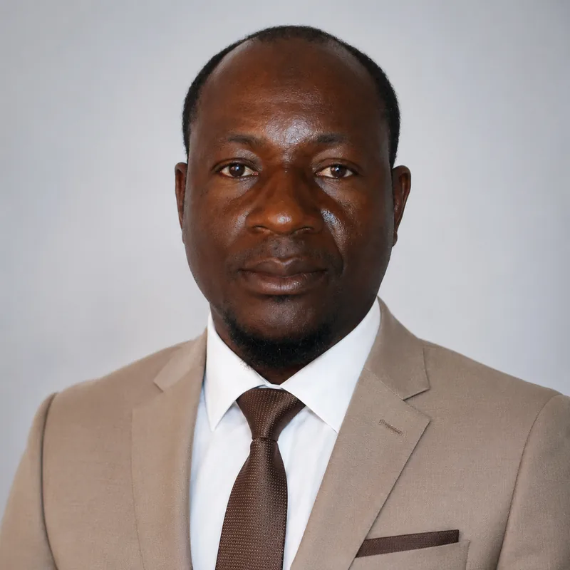
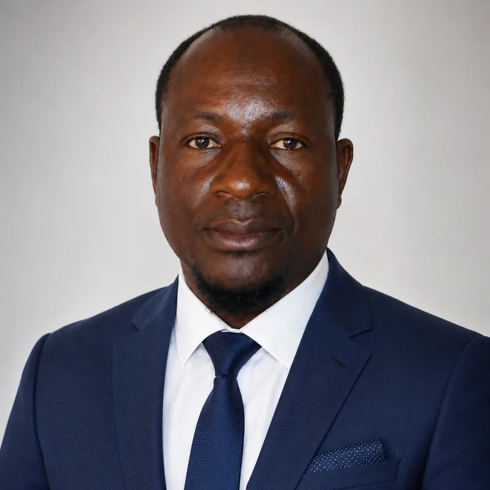
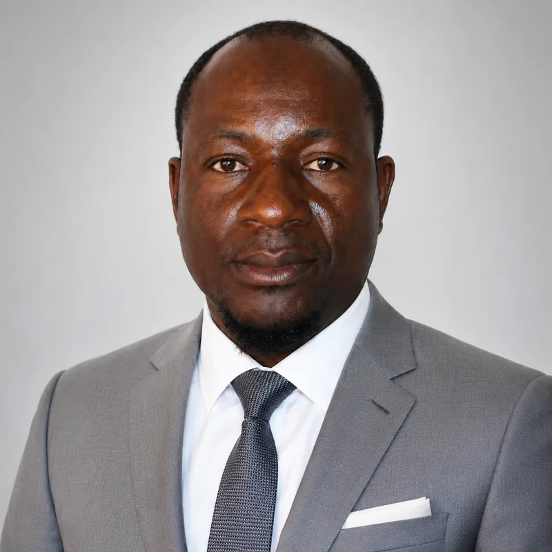

Project management
Design, coordination and management of development projects, from diagnosis to reporting.
Development planning • Humanitarian action • Capacity building • Studies & MEAL • GIS & Data analytics
Designing, managing and evaluating high-impact projects through field expertise and data intelligence.
Expertise built with FAO, international organisations and development actors in Mali and West Africa.





I support United Nations agencies, NGOs, public institutions, companies and donors in the design, coordination and monitoring and evaluation of development, environment and humanitarian response projects.
Design, coordination and management of development projects, from diagnosis to reporting.
Monitoring systems, indicators, data collection and analysis, evaluations and reporting.
Food security and nutrition projects, community-based approaches and rural development.
Emergency response, beneficiary targeting, coordination among actors, communal emergency plans.
Mapping, databases, dashboards and statistical analysis.
Training, coaching and support for teams, facilitators and community leaders.
Four communes of Dioïla circle (Kaladougou, N'Garadougou, Dègnékoro, Kilidougou), for KILABO, UN Women and WPHF. Role: national consultant in charge of capacity building.
Data collection and dashboard system for the Bougouni NGO regional coordination: three workbooks, a six-step data circuit, 36/36 tests passed.
Ten years of facilitation and monitoring of community listening clubs in Mali: over 1,500 clubs followed up, over 7,000 leaders trained.
Agencies, NGOs, institutions, companies
Direct intervention as an independent national consultant: scoping, assignment delivery, deliverables validated with you.
Firms, joint ventures, tender responses
National expert integrated in your team: contribution to a bid, then delivery in the field.
National organisations, local authorities, associations
Long-term support: tools, procedures, staff training, monitoring systems.
“Through his professionalism and technical leadership, Mr Sidi Koné has established himself as a reference Dimitra Clubs specialist in Mali and West Africa.”
Mme Andrea Sanchez Enciso — International coordinator of the Dimitra Clubs programme, FAO
All references →A project to design, an evaluation, a mapping exercise or a monitoring system to set up? Let's talk.